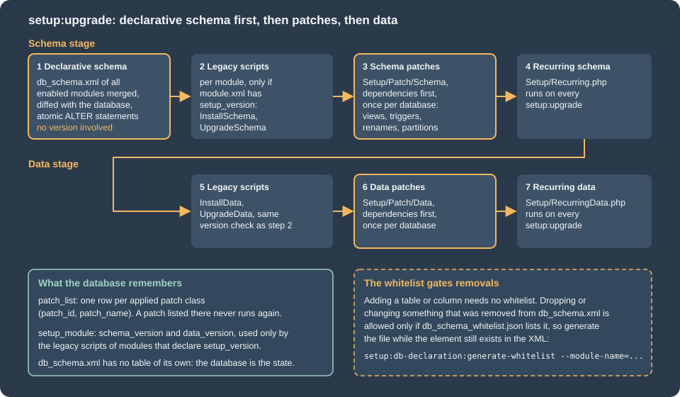

Declarative Schema and Patches
|
This content was generated with the assistance of AI and should be verified against the official documentation before being relied on in production. |
Almost every Magento extension that stores something needs a table, and every upgrade of a shop has to bring the tables of
all its modules to the shape the new code expects. Until 2.3 this was done with PHP scripts that said how to get from one
version to the next. Since then a module declares the shape it wants in an XML file and Magento works out the difference
by itself, while one-off changes that cannot be declared (seed data, a view, a trigger) are classes called patches. This page covers both
halves with the Pocket Coffee roast lot table: the db_schema.xml file, the whitelist that governs removals, the commands that
preview and protect a change, data and schema patches, and, because shops and books still contain them, the legacy
InstallSchema and UpgradeSchema scripts and the tool that converts them.
The page was written against Magento Open Source and Adobe Commerce 2.4.9 (generally available 2026-05-12) and Mage-OS 3.6.0
(2026-10-14, built on the 2.4.9 code base) and checked on 2026-10-27. Declarative schema and patches are part of the PHP
platform, so they apply to Magento Open Source, Adobe Commerce on premises or on cloud infrastructure, and Mage-OS; Adobe
Commerce as a Cloud Service (ACCS) accepts no PHP modules and so no schema of your own (see the
editions page). Every command and output below comes from a Mage-OS 3.6.0
installation in developer mode (PHP 8.5.12, MariaDB 11.8.9, OpenSearch 3.9.0, Valkey 9.1.3). The module is PocketCoffee_Lot,
whose service contract is on the previous page; three throw-away
modules (PocketCoffee_LotLab, PocketCoffee_LotLegacy and PocketCoffee_LotRevert) were used for the experiments.
The module skeleton and the enabling commands are on the module anatomy page.
How setup:upgrade changes the database
The decisive difference between the two generations is where the state lives. A legacy script compares the installed module
version with the version it is written for and runs only the steps in between, so the sequence of scripts is the history of the
module. The declarative file describes the end state; Magento reads the database, computes the differences and executes
atomic statements. Patches are the exception: they run once, are recorded, and are never repeated. bin/magento setup:upgrade
(also run by setup:install) does the following, in this order, which can be read in the installer of the 2.4.9 code:
-
Declarative schema. The
db_schema.xmlfiles of all enabled modules are merged, compared with the database and applied. -
Legacy schema scripts of every module that still declares
setup_versioninmodule.xml:InstallSchemaandUpgradeSchema. -
Schema patches of the module, then recurring schema scripts of all modules.
-
Legacy data scripts (
InstallData,UpgradeData) and data patches, module by module, then recurring data scripts.

Because the declarative step is first, a patch may rely on the tables and columns that the same release declares. Because the patches come after the legacy scripts, a module that is being migrated can keep both for a while (see the last section).
The next sections follow the lifecycle of one table, pocketcoffee_lot, from declaration to removal.
db_schema.xml
The file is etc/db_schema.xml in the module. Its root element is schema, validated by
urn:magento:framework:Setup/Declaration/Schema/etc/schema.xsd, and it contains table elements, each with column,
constraint and index children. Several modules may declare the same table; the files are merged, which is how one module adds
a column to the table of another.
The table of the roast lots
The complete declaration, with a column of each kind that Pocket Coffee needs: an auto-increment key, a foreign key to the product, a unique pair, a date, a decimal, a status with a default, and two timestamps that the database maintains.
<?xml version="1.0"?>
<schema xmlns:xsi="http://www.w3.org/2001/XMLSchema-instance" xsi:noNamespaceSchemaLocation="urn:magento:framework:Setup/Declaration/Schema/etc/schema.xsd">
<table name="pocketcoffee_lot" resource="default" engine="innodb" comment="Pocket Coffee roast lots">
<column xsi:type="int" name="lot_id" unsigned="true" nullable="false" identity="true" comment="Lot ID"/>
<column xsi:type="int" name="product_id" unsigned="true" nullable="false" comment="Product ID"/>
<column xsi:type="varchar" name="sku" nullable="false" length="64" comment="SKU of the product"/>
<column xsi:type="varchar" name="origin" nullable="false" length="32" comment="Coffee origin"/>
<column xsi:type="date" name="roasted_at" nullable="false" comment="Roast date"/>
<column xsi:type="decimal" name="weight_kg" scale="3" precision="8" unsigned="true" nullable="false" default="0" comment="Weight roasted in kilograms"/>
<column xsi:type="smallint" name="status" unsigned="true" nullable="false" default="0" comment="0 roasting, 1 ready, 2 sold out"/>
<column xsi:type="timestamp" name="created_at" nullable="false" default="CURRENT_TIMESTAMP" on_update="false" comment="Created at"/>
<column xsi:type="timestamp" name="updated_at" nullable="false" default="CURRENT_TIMESTAMP" on_update="true" comment="Updated at"/>
<constraint xsi:type="primary" referenceId="PRIMARY">
<column name="lot_id"/>
</constraint>
<constraint xsi:type="foreign" referenceId="POCKETCOFFEE_LOT_PRODUCT_ID_CATALOG_PRODUCT_ENTITY_ENTITY_ID" table="pocketcoffee_lot" column="product_id" referenceTable="catalog_product_entity" referenceColumn="entity_id" onDelete="CASCADE"/>
<constraint xsi:type="unique" referenceId="POCKETCOFFEE_LOT_SKU_ROASTED_AT">
<column name="sku"/>
<column name="roasted_at"/>
</constraint>
<index referenceId="POCKETCOFFEE_LOT_ORIGIN" indexType="btree">
<column name="origin"/>
</index>
<index referenceId="POCKETCOFFEE_LOT_STATUS_ROASTED_AT" indexType="btree">
<column name="status"/>
<column name="roasted_at"/>
</index>
</table>
</schema>The module needs one more file, etc/db_schema_whitelist.json, described below. With both in place, setup:db:status before the
first upgrade reports what is missing, in a machine-readable form:
$ bin/magento setup:db:status
Validator Magento\Framework\Setup\Declaration\Schema\UpToDateDeclarativeSchema isUpToDate: false
Declarative Schema is not up to date
Details: {
"total_differences": 1,
"by_change_type": {
"create_table": 1
},
"affected_tables": {
"pocketcoffee_lot": {
"create_table": 1
}
},
"changes": [
{
"operation": "create_table",
"index": 0,
"table": "pocketcoffee_lot",
"name": "pocketcoffee_lot",
"type": "table"
}
]
}
Validator Magento\Framework\Setup\Patch\UpToDateSchema isUpToDate: true
Validator Magento\Framework\Setup\Patch\UpToDateData isUpToDate: true
Validator Magento\Framework\Setup\OldDbValidator isUpToDate: true
Run 'setup:upgrade' to update your DB schema and data.setup:upgrade --dry-run=1 does not change the database and writes the statements it would run to
var/log/dry-run-installation.log:
$ bin/magento setup:upgrade --dry-run=1
$ cat var/log/dry-run-installation.log
CREATE TABLE `pocketcoffee_lot` (
`lot_id` int UNSIGNED NOT NULL AUTO_INCREMENT COMMENT "Lot ID",
`product_id` int UNSIGNED NOT NULL COMMENT "Product ID",
`sku` varchar(64) CHARACTER SET utf8mb4 COLLATE utf8mb4_general_ci NOT NULL COMMENT "SKU of the product",
`origin` varchar(32) CHARACTER SET utf8mb4 COLLATE utf8mb4_general_ci NOT NULL COMMENT "Coffee origin",
`roasted_at` date NOT NULL COMMENT "Roast date",
`weight_kg` decimal(8, 3) UNSIGNED NOT NULL DEFAULT 0 COMMENT "Weight roasted in kilograms",
`status` smallint UNSIGNED NOT NULL DEFAULT 0 COMMENT "0 roasting, 1 ready, 2 sold out",
`created_at` timestamp NOT NULL DEFAULT CURRENT_TIMESTAMP COMMENT "Created at",
`updated_at` timestamp NOT NULL DEFAULT CURRENT_TIMESTAMP ON UPDATE CURRENT_TIMESTAMP COMMENT "Updated at",
CONSTRAINT PRIMARY KEY (`lot_id`),
CONSTRAINT `POCKETCOFFEE_LOT_PRODUCT_ID_CATALOG_PRODUCT_ENTITY_ENTITY_ID` FOREIGN KEY (`product_id`) REFERENCES `catalog_product_entity` (`entity_id`) ON DELETE CASCADE,
CONSTRAINT `POCKETCOFFEE_LOT_SKU_ROASTED_AT` UNIQUE KEY (`sku`,`roasted_at`),
INDEX `POCKETCOFFEE_LOT_ORIGIN` (`origin`),
INDEX `POCKETCOFFEE_LOT_STATUS_ROASTED_AT` (`status`,`roasted_at`)
) ENGINE=innodb DEFAULT CHARSET=utf8mb4 DEFAULT COLLATE=utf8mb4_general_ci COMMENT="Pocket Coffee roast lots"After the real upgrade the table exists as declared. Two details are worth reading: the key names are the upper case names that Magento generates from the table and the columns, and the foreign key got an index of its own, because MariaDB requires one.
$ mariadb magento -e "show create table pocketcoffee_lot\G"
CREATE TABLE `pocketcoffee_lot` (
`lot_id` int(10) unsigned NOT NULL AUTO_INCREMENT COMMENT 'Lot ID',
`product_id` int(10) unsigned NOT NULL COMMENT 'Product ID',
`sku` varchar(64) NOT NULL COMMENT 'SKU of the product',
`origin` varchar(32) NOT NULL COMMENT 'Coffee origin',
`roasted_at` date NOT NULL COMMENT 'Roast date',
`weight_kg` decimal(8,3) unsigned NOT NULL DEFAULT 0.000 COMMENT 'Weight roasted in kilograms',
`status` smallint(5) unsigned NOT NULL DEFAULT 0 COMMENT '0 roasting, 1 ready, 2 sold out',
`created_at` timestamp NOT NULL DEFAULT current_timestamp() COMMENT 'Created at',
`updated_at` timestamp NOT NULL DEFAULT current_timestamp() ON UPDATE current_timestamp() COMMENT 'Updated at',
PRIMARY KEY (`lot_id`),
UNIQUE KEY `POCKETCOFFEE_LOT_SKU_ROASTED_AT` (`sku`,`roasted_at`),
KEY `POCKETCOFFEE_LOT_PRODUCT_ID_CATALOG_PRODUCT_ENTITY_ENTITY_ID` (`product_id`),
KEY `POCKETCOFFEE_LOT_ORIGIN` (`origin`),
KEY `POCKETCOFFEE_LOT_STATUS_ROASTED_AT` (`status`,`roasted_at`),
CONSTRAINT `POCKETCOFFEE_LOT_PRODUCT_ID_CATALOG_PRODUCT_ENTITY_ENTITY_ID` FOREIGN KEY (`product_id`) REFERENCES `catalog_product_entity` (`entity_id`) ON DELETE CASCADE
) ENGINE=InnoDB DEFAULT CHARSET=utf8mb4 COLLATE=utf8mb4_general_ci COMMENT='Pocket Coffee roast lots'The diagram shows the table and the foreign key to the catalog. A summary view over the table is added later by a schema patch,
because db_schema.xml cannot declare views.
Table attributes
| Attribute | Values | Meaning |
|---|---|---|
|
string, required |
Table name. The table prefix of the installation (the |
|
|
The database connection (shard) the table is created on. The values |
|
|
Storage engine. |
|
string |
Table comment, shown in |
|
strings |
Override of the default (the page’s table used the defaults |
|
|
Copies the rows of an existing table when this table is created, used to rename a table. |
|
|
Drops the table (the same attribute exists on every child element). |
Column types and attributes
The xsi:type of a column selects the SQL type and the attributes that the XSD allows for it. The types of the 2.4.9 schema
are smallint, tinyint, int and bigint (the integer family), decimal, float and double, varchar and char, text,
mediumtext and longtext, json, boolean, date, datetime and timestamp, and blob, mediumblob, longblob and
varbinary.
| Attribute | Applies to and meaning |
|---|---|
|
All columns. The name is required; the comment ends up in the database. |
|
|
|
A value of the column’s own type. For |
|
Integers and |
|
Integers: |
|
Integers: the display width. The converter of legacy scripts writes it, new declarations leave it out. |
|
|
|
|
|
|
|
|
|
|
A column without nullable is nullable, which matters when a declaration is converted from a database dump or from legacy
code: the safe habit is to write nullable="false" explicitly, as the table above does. A decimal column prints its default as
0.000 in the database even though the XML says 0.
Constraints and indexes
Constraints and indexes are declared with a referenceId, which is only the identifier that ties the declaration to the entries
of the whitelist and to declarations of other modules. The name the database gets is generated: in an experiment, an index with the
referenceId MY_CUSTOM_NOTE_ID on the column note of the table pocketcoffee_revert became the key POCKETCOFFEE_REVERT_NOTE, and
that generated name is what the whitelist stores. Adobe recommends copying the generated names into the referenceId, which is what
the Pocket Coffee file does, so that the declaration and the whitelist agree.
| Element | Notes |
|---|---|
|
One per table. |
|
Unique key over the listed columns ( |
|
Attributes |
|
Attribute |
The whitelist
Declarative schema is eager to create and change, and deliberately careful about removing. A table, column, index or constraint
that disappears from the XML is dropped only when the element is listed in the module’s etc/db_schema_whitelist.json.
The file is a history of the elements the module has declared; Magento generates it from the current db_schema.xml:
bin/magento setup:db-declaration:generate-whitelist --module-name=PocketCoffee_Lot{
"pocketcoffee_lot": {
"column": {
"lot_id": true,
"product_id": true,
"sku": true,
"origin": true,
"roasted_at": true,
"weight_kg": true,
"status": true,
"created_at": true,
"updated_at": true
},
"index": {
"POCKETCOFFEE_LOT_ORIGIN": true,
"POCKETCOFFEE_LOT_STATUS_ROASTED_AT": true
},
"constraint": {
"PRIMARY": true,
"POCKETCOFFEE_LOT_PRODUCT_ID_CATALOG_PRODUCT_ENTITY_ENTITY_ID": true,
"POCKETCOFFEE_LOT_SKU_ROASTED_AT": true
}
}
}Without --module-name the command generates the whitelist of every module, and the default is all. The file has to be generated
(and committed) in every release that changes db_schema.xml. It cannot be generated on an installation that uses a database
prefix, because the prefix changes some of the names that the file stores; generate it on a development installation without one.
The documentation calls the file temporary; in 2.4.9 it is still required, and setup:db-declaration:generate-whitelist is part of
bin/magento list on Mage-OS 3.6.0.
What the whitelist does and does not gate
The behaviour was measured with the experimental module PocketCoffee_LotLab, a table pocketcoffee_lab with a title column and a
grind column, changed step by step. Each step used setup:upgrade --dry-run=1 to read the statements and then the real upgrade.
| Change in db_schema.xml | Whitelist | Result |
|---|---|---|
Add the column |
none yet |
Applied: |
Remove the column |
none yet |
Not dropped. The dry run printed no statement and |
Generate the whitelist now (the column is already gone from the XML) |
|
Still not dropped: the whitelist is generated from the current XML, so it never learned about |
Put |
lists |
|
Replace |
lists |
|
Disable the module (and run |
lists the table |
|
The lessons, in order of importance. Adding and changing need no whitelist; removing does. The whitelist must be generated
while the element is still in the XML (add, generate, release; later remove), or Magento will keep the orphan forever. Disabling a
module drops its whitelisted tables on the next setup:upgrade, a behaviour that the documentation describes ("the
db_schema_whitelist.json file of disabled modules is still read") and that the last row confirmed on the local shop. A module that has
no whitelist keeps its tables when it is disabled (a one-table module without the file was enabled, upgraded, disabled and upgraded again,
and the table stayed).
Protecting data during a change
Removing a column or a table destroys data, and the installer has two options to soften that. --safe-mode=1 writes a CSV dump of
what a destructive change would lose; --data-restore=1 puts it back into the column or table when the declaration returns.
In the lab, removing grind with setup:upgrade --safe-mode=1 produced this file, and re-adding the column with
setup:upgrade --data-restore=1 brought the value back and deleted the dump:
$ cat var/declarative_dumps_csv/pocketcoffee_lab_column_grind.csv
lab_id,grind
1,espresso
$ bin/magento setup:upgrade --data-restore=1
$ mariadb magento -e "select * from pocketcoffee_lab"
lab_id name size_g grind
1 Single-origin beans espresso 250The file name has the form <table>_column_<column>.csv, which differs from the pattern in the documentation text
({column_name_column_type_other_dimensions}.csv); the documentation gives <table>.csv for a dropped table. Destructive operations, in the
documentation’s list, are deleting a table or a column, reducing a column length, changing the precision, and changing the column
type. Before such a release, take a database backup anyway: the dump covers only what the installer recognizes.
Evolving a table
All the operations below are changes of the XML followed by setup:upgrade; only some need the whitelist. The rows marked "run" were
executed on the local shop; the others are in the documentation.
| Operation | How | Whitelist |
|---|---|---|
Create a table |
Add the |
not needed |
Add a column or an index |
Add the element. Run. |
not needed |
Change a column type or length |
Change the attributes of the |
not needed |
Drop a column or an index |
Delete the element. Run for a column; the documentation says the same for constraints and indexes. |
required |
Rename a column |
Declare the new column with |
old name required |
Rename a table |
Declare the new table with |
old name required |
Drop a table |
Delete the |
required |
Drop a column or constraint declared by another module |
Redeclare it with |
of the declaring module |
Change a primary key declared elsewhere |
Disable the old key ( |
required |
For the cross-module row, the whitelist of the module that declared the column (here weight_kg in PocketCoffee_LotLegacy) was what
allowed the drop. Foreign keys can only be added between tables that both come from declarative schema.
Patches
Not everything is a table shape. Seed data, a view, a trigger, the creation of an EAV attribute or the move of rows from one column to another are one-off changes, and they are written as patches: classes that Magento finds by their folder, runs once and records. There are two kinds.
| Data patch | Schema patch | |
|---|---|---|
Folder |
|
|
Interface |
|
|
For |
DML: inserts and updates, EAV attributes and configuration through the setup classes. |
DDL that the declarative file cannot express: views, triggers, stored procedures, renames, partitions, table options. |
Runs |
After the declarative schema and the schema patches of its module. |
After the declarative schema and the legacy schema scripts of its module. |
Transaction |
Inside one, rolled back on an exception. |
None: DDL commits implicitly in MySQL and MariaDB. |
Both interfaces extend PatchInterface, which demands three methods: apply(), which does the work and returns $this, the static
getDependencies(), which lists the patch classes that must run first, and getAliases(), which lists the former class names of
the patch. The applied patches are stored by class name in the table patch_list; after the Pocket Coffee module was installed it
held three rows for it:
$ mariadb magento -e "select patch_id, patch_name from patch_list where patch_name like '%PocketCoffee%Lot%'"
patch_id patch_name
201 PocketCoffee\\Lot\\Setup\\Patch\\Schema\\AddLotSummaryView
202 PocketCoffee\\Lot\\Setup\\Patch\\Data\\AddFirstLots
203 PocketCoffee\\Lot\\Setup\\Patch\\Data\\MarkOldLotsSoldOutBecause the identity of a patch is its class name, a patch must not be renamed or moved without an alias, and a patch that has been applied can never be changed in place: write a new patch.
Generating a stub
The command setup:db-declaration:generate-patch writes the skeleton of a patch into the right folder, with the options --revertable
(adds PatchRevertableInterface) and --type=data|schema:
$ bin/magento setup:db-declaration:generate-patch --revertable=true PocketCoffee_Lot AddFirstLots
Patch 10as been successfully generated.The garbled "10as" is the actual message of 2.4.9 (a formatting slip for "has"); the file is correct. The stub, before editing:
<?php
/**
* Copyright 2018 Adobe
* All Rights Reserved.
*/
declare(strict_types=1);
namespace PocketCoffee\Lot\Setup\Patch\Data;
use Magento\Framework\Setup\ModuleDataSetupInterface;
use Magento\Framework\Setup\Patch\DataPatchInterface;
use Magento\Framework\Setup\Patch\PatchRevertableInterface;
/**
* Patch is mechanism, that allows to do atomic upgrade data changes
*/
class AddFirstLots implements
DataPatchInterface,
PatchRevertableInterface
{
/**
* @var ModuleDataSetupInterface $moduleDataSetup
*/
private $moduleDataSetup;
/**
* @param ModuleDataSetupInterface $moduleDataSetup
*/
public function __construct(ModuleDataSetupInterface $moduleDataSetup)
{
$this->moduleDataSetup = $moduleDataSetup;
}
/**
* Do Upgrade
*
* @return void
*/
public function apply()
{
}
/**
* @inheritdoc
*/
public function revert()
{
}
/**
* @inheritdoc
*/
public function getAliases()
{
return [];
}
/**
* @inheritdoc
*/
public static function getDependencies()
{
return [];
}
}A data patch
The first Pocket Coffee patch seeds the lots of the product POCKET-001 and skips silently when the product does not exist (so that
the module installs in a shop without the demo product). It uses the setup object that the container injects,
ModuleDataSetupInterface, with startSetup() and endSetup() around the work: the first sets the SQL mode
NO_AUTO_VALUE_ON_ZERO and turns the foreign key checks off, the second restores both.
<?php
declare(strict_types=1);
namespace PocketCoffee\Lot\Setup\Patch\Data;
use Magento\Framework\Setup\ModuleDataSetupInterface;
use Magento\Framework\Setup\Patch\DataPatchInterface;
/**
* Seeds three roast lots for the product POCKET-001 (skipped when the product does not exist). It inserts rows, so it
* is not revertable: reverting an insert needs a DELETE, which the revert contract forbids.
*/
class AddFirstLots implements DataPatchInterface
{
private const SKU = 'POCKET-001';
private const LOTS = [
['origin' => 'Ethiopia', 'roasted_at' => '2026-09-14', 'weight_kg' => '12.500', 'status' => 1],
['origin' => 'Colombia', 'roasted_at' => '2026-10-05', 'weight_kg' => '20.000', 'status' => 1],
['origin' => 'Brazil', 'roasted_at' => '2026-10-26', 'weight_kg' => '15.250', 'status' => 0],
];
public function __construct(private readonly ModuleDataSetupInterface $moduleDataSetup)
{
}
/**
* @inheritDoc
*/
public function apply()
{
$connection = $this->moduleDataSetup->getConnection();
$connection->startSetup();
$productId = $connection->fetchOne(
$connection->select()
->from($this->moduleDataSetup->getTable('catalog_product_entity'), 'entity_id')
->where('sku = ?', self::SKU)
);
if ($productId) {
$rows = [];
foreach (self::LOTS as $lot) {
$rows[] = ['product_id' => (int) $productId, 'sku' => self::SKU] + $lot;
}
$connection->insertOnDuplicate(
$this->moduleDataSetup->getTable('pocketcoffee_lot'),
$rows,
['weight_kg', 'status']
);
}
$connection->endSetup();
return $this;
}
/**
* @inheritDoc
*/
public function getAliases()
{
return [];
}
/**
* @inheritDoc
*/
public static function getDependencies()
{
return [];
}
}Patches run in the transaction of the setup connection. To prove it, a patch of the experimental module inserted a row and then threw an
exception. The upgrade failed with the exception message, the row was not in the table, and no row of the patch was added to
patch_list, so the next upgrade tries again:
$ bin/magento setup:upgrade
...
Unable to apply data patch PocketCoffee\LotRevert\Setup\Patch\Data\FailingPatch for module PocketCoffee_LotRevert. Original exception message: Roaster is on fire
Upgrade failed: Unable to apply data patch ...A patch that has to commit in the middle (a large migration, or DDL) marks itself with Magento\Framework\Setup\Patch\NonTransactionableInterface
and takes responsibility for its own consistency. Schema patches never run in a transaction and a failure is wrapped in the
exception Unable to apply patch ... for module ....
Dependencies
getDependencies() returns the class names of patches, in any module, that must have run before. The second patch of the module
marks the old lots as sold out and depends on the first:
<?php
declare(strict_types=1);
namespace PocketCoffee\Lot\Setup\Patch\Data;
use Magento\Framework\Setup\ModuleDataSetupInterface;
use Magento\Framework\Setup\Patch\DataPatchInterface;
use Magento\Framework\Setup\Patch\PatchRevertableInterface;
use PocketCoffee\Lot\Api\Data\LotInterface;
/**
* Marks the lots roasted before 2026-09-30 as sold out. It must run after AddFirstLots, and it only uses UPDATE, which
* is what the revert contract allows: revert() puts the same lots back to ready.
*/
class MarkOldLotsSoldOut implements DataPatchInterface, PatchRevertableInterface
{
private const CUTOFF = '2026-09-30';
public function __construct(private readonly ModuleDataSetupInterface $moduleDataSetup)
{
}
/**
* @inheritDoc
*/
public function apply()
{
$connection = $this->moduleDataSetup->getConnection();
$connection->startSetup();
$connection->update(
$this->moduleDataSetup->getTable('pocketcoffee_lot'),
['status' => LotInterface::STATUS_SOLD_OUT],
['roasted_at < ?' => self::CUTOFF, 'status = ?' => LotInterface::STATUS_READY]
);
$connection->endSetup();
return $this;
}
/**
* @inheritDoc
*/
public function revert()
{
$connection = $this->moduleDataSetup->getConnection();
$connection->startSetup();
$connection->update(
$this->moduleDataSetup->getTable('pocketcoffee_lot'),
['status' => LotInterface::STATUS_READY],
['roasted_at < ?' => self::CUTOFF, 'status = ?' => LotInterface::STATUS_SOLD_OUT]
);
$connection->endSetup();
}
/**
* @inheritDoc
*/
public function getAliases()
{
return [];
}
/**
* @inheritDoc
*/
public static function getDependencies()
{
return [AddFirstLots::class];
}
}A patch with no dependencies can run in any order relative to the others. A cycle is caught before anything runs: two experimental patches that listed each other stopped the upgrade with a clear message.
$ bin/magento setup:upgrade
...
Cyclomatic dependency during patch installation
Upgrade failed: Cyclomatic dependency during patch installationA patch can depend on a patch of another module; that module must then be enabled, and should be in sequence.
Aliases: renaming a patch
getAliases() lets a patch change its name without running again on shops that applied the old name. The experiment renamed
AddNote to AddNoteRenamed and listed the old class as an alias. The new patch inserts into a table that no longer exists, so any
actual run would have failed, yet the upgrade completed, and patch_list now held both names:
<?php
declare(strict_types=1);
namespace PocketCoffee\LotRevert\Setup\Patch\Data;
use Magento\Framework\Setup\ModuleDataSetupInterface;
use Magento\Framework\Setup\Patch\DataPatchInterface;
/**
* Former name: AddNote. The alias keeps databases that applied the old name from running the patch again.
*/
class AddNoteRenamed implements DataPatchInterface
{
public function __construct(private readonly ModuleDataSetupInterface $setup)
{
}
public function apply()
{
// inserts into a table that no longer exists: it fails if the patch runs again
$this->setup->getConnection()->insert($this->setup->getTable('pocketcoffee_revert'), ['note' => 'applied']);
return $this;
}
public function getAliases()
{
return [AddNote::class];
}
public static function getDependencies()
{
return [];
}
}$ mariadb magento -e "select patch_name from patch_list where patch_name like '%LotRevert%'"
PocketCoffee\\LotRevert\\Setup\\Patch\\Data\\AddNote
PocketCoffee\\LotRevert\\Setup\\Patch\\Data\\AddNoteRenamedA schema patch
Views are the standard example of what the declarative file cannot say. The patch below creates a summary view of the lots by origin
with CREATE OR REPLACE VIEW through the connection of SchemaSetupInterface. The declarative schema ignores objects it does not
know: setup:db:status stayed green with the view in place.
<?php
declare(strict_types=1);
namespace PocketCoffee\Lot\Setup\Patch\Schema;
use Magento\Framework\Setup\Patch\SchemaPatchInterface;
use Magento\Framework\Setup\SchemaSetupInterface;
/**
* Creates a MySQL view over pocketcoffee_lot. db_schema.xml cannot declare views, so this is a schema patch.
* Schema patches are never reverted by the Framework, so the view stays when the module is uninstalled.
*/
class AddLotSummaryView implements SchemaPatchInterface
{
private const VIEW = 'pocketcoffee_lot_summary';
public function __construct(private readonly SchemaSetupInterface $schemaSetup)
{
}
/**
* @inheritDoc
*/
public function apply()
{
$this->schemaSetup->startSetup();
$view = $this->schemaSetup->getTable(self::VIEW);
$lots = $this->schemaSetup->getTable('pocketcoffee_lot');
$this->schemaSetup->getConnection()->query(
"CREATE OR REPLACE VIEW {$view} AS "
. "SELECT origin, COUNT(*) AS lots, SUM(weight_kg) AS total_kg, MAX(roasted_at) AS last_roasted_at "
. "FROM {$lots} GROUP BY origin"
);
$this->schemaSetup->endSetup();
return $this;
}
/**
* @inheritDoc
*/
public function getAliases()
{
return [];
}
/**
* @inheritDoc
*/
public static function getDependencies()
{
return [];
}
}$ mariadb magento -e "select * from pocketcoffee_lot_summary"
origin lots total_kg last_roasted_at
Brazil 1 15.250 2026-10-26
Colombia 1 20.000 2026-10-05
Ethiopia 1 12.500 2026-09-14The Magento2 coding standard reports the query() call as a "possible raw SQL statement" warning; it is accepted here because the
statement is DDL on names that come from the module itself and from the table prefix aware getTable().
Reverting patches
A data patch can implement Magento\Framework\Setup\Patch\PatchRevertableInterface, whose single method revert() undoes the changes
of apply(). The interface comment states the contract: no application layer (serializers, collections), only the DML
operations INSERT and UPDATE, DELETE is prohibited because it can trigger foreign keys, and "all schema patches are not
revertable". The 2.4.9 code agrees: the only caller is the module uninstaller, and the only method of the applier that reverts is
revertDataPatches(); there is none for schema patches, so the revert() of a schema patch is never called.
A revert is never applied to one patch: it is applied to all revertable data patches of a module, in reverse order of the dependency
graph, by the uninstall command. For a module in app/code:
$ bin/magento module:uninstall --non-composer --remove-data -n PocketCoffee_Lot
$ mariadb magento -e "select lot_id, origin, status from pocketcoffee_lot"
lot_id origin status
1 Ethiopia 1 <- was 2 before; MarkOldLotsSoldOut::revert() ran
...
$ mariadb magento -e "select patch_name from patch_list where patch_name like '%Lot%Patch%'"
PocketCoffee\\Lot\\Setup\\Patch\\Schema\\AddLotSummaryView
PocketCoffee\\Lot\\Setup\\Patch\\Data\\AddFirstLotsWhat the run showed. The revertable patch ran its revert(), set the Ethiopia lot back to ready and its row left patch_list. The
non-revertable AddFirstLots was left alone, its rows stayed, the schema patch row stayed and the view stayed. The table was not
dropped and the module stayed enabled: the command removes the data of revertable patches, nothing else. The next setup:upgrade
applied the patch again (the lot returned to status 2), which is also the answer to "can I re-run a patch": remove its row from
patch_list, or revert it, and upgrade. The documentation adds the Composer variant, bin/magento module:uninstall Vendor_Module,
for modules installed with Composer.
Data patches for attributes
EAV attributes (products, customers, categories) are created by data patches that use the setup factories, for example
EavSetupFactory, injected into the patch and used with the ModuleDataSetupInterface. The documentation’s troubleshooting note
warns to inject the factory and not EavSetup itself, or setup:upgrade fails; the next page of the learning path on
EAV and attributes has the complete examples.
Legacy scripts and the migration to declarative schema
Shops and 2016 books are full of InstallSchema, UpgradeSchema, InstallData, UpgradeData and the Recurring scripts of
modules written for 2.0 to 2.2. They are the reason the Magento 2 Cookbook has a recipe called "Creating tables using setup scripts".
They still run in 2.4.9, but only if module.xml declares setup_version; without it the installer skips the legacy scripts of that
module and runs patches only. A legacy table of Pocket Coffee, as the books write it:
<?php
declare(strict_types=1);
namespace PocketCoffee\LotLegacy\Setup;
use Magento\Framework\DB\Ddl\Table;
use Magento\Framework\Setup\InstallSchemaInterface;
use Magento\Framework\Setup\ModuleContextInterface;
use Magento\Framework\Setup\SchemaSetupInterface;
/**
* Legacy style (before 2.3): runs once, when the module is installed.
*/
class InstallSchema implements InstallSchemaInterface
{
/**
* @inheritDoc
*/
public function install(SchemaSetupInterface $setup, ModuleContextInterface $context)
{
$setup->startSetup();
$table = $setup->getConnection()
->newTable($setup->getTable('pocketcoffee_legacy_lot'))
->addColumn('lot_id', Table::TYPE_INTEGER, null, ['identity' => true, 'unsigned' => true, 'nullable' => false, 'primary' => true], 'Lot ID')
->addColumn('sku', Table::TYPE_TEXT, 64, ['nullable' => false], 'SKU')
->addColumn('roasted_at', Table::TYPE_DATE, null, ['nullable' => false], 'Roast date')
->addIndex($setup->getIdxName('pocketcoffee_legacy_lot', ['sku']), ['sku'])
->setComment('Legacy roast lots');
$setup->getConnection()->createTable($table);
$setup->endSetup();
}
}<?php
declare(strict_types=1);
namespace PocketCoffee\LotLegacy\Setup;
use Magento\Framework\DB\Ddl\Table;
use Magento\Framework\Setup\ModuleContextInterface;
use Magento\Framework\Setup\SchemaSetupInterface;
use Magento\Framework\Setup\UpgradeSchemaInterface;
/**
* Legacy style: every upgrade checks the installed version by hand.
*/
class UpgradeSchema implements UpgradeSchemaInterface
{
/**
* @inheritDoc
*/
public function upgrade(SchemaSetupInterface $setup, ModuleContextInterface $context)
{
$setup->startSetup();
if (version_compare($context->getVersion(), '1.0.1', '<')) {
$setup->getConnection()->addColumn(
$setup->getTable('pocketcoffee_legacy_lot'),
'weight_kg',
['type' => Table::TYPE_DECIMAL, 'length' => '8,3', 'nullable' => false, 'default' => '0.000', 'comment' => 'Weight in kg']
);
}
$setup->endSetup();
}
}<?xml version="1.0"?>
<config xmlns:xsi="http://www.w3.org/2001/XMLSchema-instance" xsi:noNamespaceSchemaLocation="urn:magento:framework:Module/etc/module.xsd">
<module name="PocketCoffee_LotLegacy" setup_version="1.0.1"/>
</config>The module installed on Mage-OS 3.6.0 (setup_module recorded schema_version and data_version 1.0.1) and the Magento2
coding standard answered with two errors, one for each script: "InstallSchema scripts are obsolete. Please use declarative schema approach in
module’s etc/db_schema.xml file" and the same text for UpgradeSchema. Legacy scripts are therefore for reading existing code, not
for writing new code.
Converting with --convert-old-scripts
The Schema Listener tool records the DDL that the old scripts run through the Magento connection and writes a db_schema.xml for the
module. It is switched on by bin/magento setup:upgrade --convert-old-scripts=1 (also on setup:install and on
setup:db-schema:upgrade), only works on a database where the scripts run, should not run in production mode, and ignores raw SQL, custom DDL
and statements in recurring scripts. After the run on the legacy module, etc/db_schema.xml appeared:
<?xml version="1.0"?>
<schema xmlns:xsi="http://www.w3.org/2001/XMLSchema-instance" xsi:noNamespaceSchemaLocation="urn:magento:framework:Setup/Declaration/Schema/etc/schema.xsd">
<table name="pocketcoffee_legacy_lot" resource="default" engine="innodb" comment="Legacy roast lots">
<column xsi:type="int" name="lot_id" padding="10" unsigned="true" nullable="false" identity="true" comment="Lot ID"/>
<column xsi:type="varchar" name="sku" nullable="false" length="64" comment="SKU"/>
<column xsi:type="date" name="roasted_at" comment="Roast date"/>
<column xsi:type="decimal" name="weight_kg" scale="3" precision="8" unsigned="false" nullable="false" default="0" comment="Weight in kg"/>
<constraint xsi:type="primary" referenceId="PRIMARY">
<column name="lot_id"/>
</constraint>
<index referenceId="POCKETCOFFEE_LEGACY_LOT_SKU" indexType="btree">
<column name="sku"/>
</index>
</table>
</schema>The conversion is a starting point and needs a review, because it is not exact. In this run two differences stand out: the date
column lost its nullable="false" (the declaration says nullable by default), and the integer column got a padding. The first one
is a trap. setup:db:status reported a modify_column difference for roasted_at immediately, and because other
upgrades ran in the shop while the converted file was in place, the real database column became date DEFAULT NULL before the
file was fixed: NOT NULL was silently lost. The fix is to complete the XML, generate the whitelist and run the upgrade, which
restored NOT NULL:
<?xml version="1.0"?>
<schema xmlns:xsi="http://www.w3.org/2001/XMLSchema-instance" xsi:noNamespaceSchemaLocation="urn:magento:framework:Setup/Declaration/Schema/etc/schema.xsd">
<table name="pocketcoffee_legacy_lot" resource="default" engine="innodb" comment="Legacy roast lots">
<column xsi:type="int" name="lot_id" unsigned="true" nullable="false" identity="true" comment="Lot ID"/>
<column xsi:type="varchar" name="sku" nullable="false" length="64" comment="SKU"/>
<column xsi:type="date" name="roasted_at" nullable="false" comment="Roast date"/>
<column xsi:type="decimal" name="weight_kg" scale="3" precision="8" unsigned="false" nullable="false" default="0" comment="Weight in kg"/>
<constraint xsi:type="primary" referenceId="PRIMARY">
<column name="lot_id"/>
</constraint>
<index referenceId="POCKETCOFFEE_LEGACY_LOT_SKU" indexType="btree">
<column name="sku"/>
</index>
</table>
</schema>The rest of the migration, from the documentation: data scripts cannot be converted; write data patches (the stub command above) and,
for a module that was already released, make each patch implement PatchVersionInterface with getVersion() equal to the
version that the old script used, so that installations that already ran the old script skip the patch. The same interface is
prohibited for new patches. Once a module uses data patches, it cannot go back to upgrade scripts, and setup_version can be
dropped from module.xml when every script has been replaced. Release notes should say that the migration happened, because the
setup_module table is no longer the history of the module.
Command reference
| Command | Purpose |
|---|---|
|
Declarative schema, patches and legacy scripts of all enabled modules; clears |
|
Reports declarative schema differences (as JSON), unapplied schema and data patches, and the legacy version check. Exit text says to run |
|
The schema half and the data half of the upgrade as separate commands. |
|
Writes |
|
Writes the skeleton of a patch. |
|
Reverts the revertable data patches of the module ( |
Since the 2016 books
The 2016 books describe the generation that this page replaces. The Magento 2 Cookbook has a recipe called "Creating tables using setup scripts" and one on database models, the Magento 2 DIY book installs with the Setup Wizard and the command line, and the Development Essentials book installs on XAMPP. What a reader coming from them should change:
-
Put new tables in
db_schema.xml, and never inInstallSchema: the coding standard flags it as obsolete. -
Do not use
setup_versionorversion_compare. The version of the module is the Composer version, and patches replace the conditions on it. -
Seed data, EAV attributes and configuration belong in data patches, which run once and in a transaction.
-
The Web Setup Wizard of the 2016 installations was removed in 2.4; upgrades are
composercommands followed bybin/magento setup:upgrade. -
A removed column is removed only if the whitelist knows it. The books have no equivalent concept.
Pocket Coffee thread
The pocketcoffee_lot table is the shop’s roast log. The module creates it with foreign keys to the catalog, seeds three lots
with a data patch, marks the old ones as sold out with a second patch that depends on the first, and keeps a summary view by origin
in a schema patch. The service contract on the previous page reads and writes it, and the product page can show the
roast date of the newest ready lot.
Pitfalls
| Symptom | Cause and remedy |
|---|---|
A removed column is still in the table. |
The whitelist did not contain it. Generate the whitelist before removing; restore the column if needed, regenerate and remove again. |
A table remains after a module is disabled. |
The module has no |
Tables vanish when a module is disabled. |
The module has a whitelist: the next |
|
Read the JSON: it names the table, the element and the type of change. After a conversion, check |
A foreign key is refused. |
One of the two tables is not declared in |
The upgrade runs for ages. |
A rename or a column type change copies the table. Run |
A patch ran twice, or not at all. |
Its class name changed without an alias, or its row was removed from |
|
It reverts only revertable data patches. Dropping a table is a change of the declarative schema: disable the module and upgrade, or remove the element. |
A revert deleted rows of other tables. |
A |
Cyclomatic dependency during patch installation. |
Two or more patches depend on each other. Remove the cycle. |
A converted |
The converter does not write |
What was and was not run
Run on the local Mage-OS 3.6.0 Docker shop: xmllint of every db_schema.xml, module.xml and the other XML files against the Magento
XSDs; the Magento2 PHP_CodeSniffer standard on the modules; setup:db:status, setup:upgrade --dry-run=1, --safe-mode=1,
--data-restore=1 and --convert-old-scripts=1; setup:db-declaration:generate-whitelist and generate-patch; the creation of
pocketcoffee_lot with its foreign key, the seed and MarkOldLotsSoldOut patches and the view; the lab experiments of the
whitelist (add, widen, drop with and without the whitelist, rename a column, rename a table, drop a column of another module, disable
the module to drop the table); the failing patch with its rollback, the dependency cycle and the alias; module:uninstall
--non-composer --remove-data with the revert of a data patch and the next upgrade; and the legacy InstallSchema and UpgradeSchema module
with its conversion and the repair of the converted file. Not run: split databases (resource values checkout and sales), a database
with a table prefix, Composer-installed modules (module:uninstall without --non-composer), PatchVersionInterface for a released
module, recurring scripts, the Web Setup Wizard and a production-mode deployment. Whitelist generation for all modules at once was not
run, to avoid rewriting the files of the core.